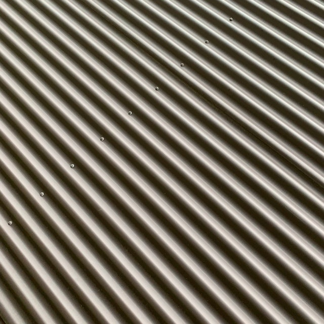
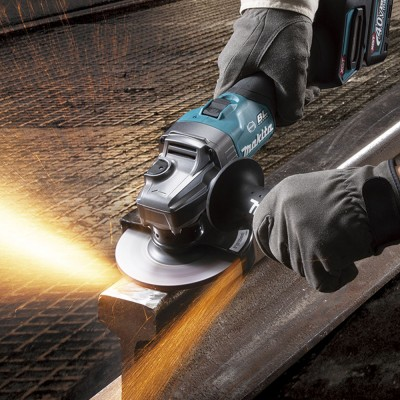

El esmeril es una herramienta eléctrica utilizada para lijar, cortar y pulir materiales como madera, metal y piedra. Este herramienta funciona mediante la rotación de una rueda abrasiva a alta velocidad, lo que permite remover material de forma eficiente y uniforme.

|
 |

|
Hay diferentes tipos de esmeriles disponibles en el mercado, incluyendo esmeriles angulares, esmeriles de banco y esmeriles de mano. Cada tipo de esmeril está diseñado para satisfacer las necesidades específicas de una tarea determinada, y es importante elegir el tipo adecuado para el trabajo que se va a realizar.
|  |
Las ventajas de usar un esmeril son muchas. En primer lugar, el esmeril permite realizar tareas de lijado, corte y pulido de manera más eficiente y precisa que con herramientas manuales. Además, el esmeril es más seguro y cómodo de usar, lo que lo hace ideal para tareas que requieren una gran cantidad de trabajo repetitivo.
En esta página web, exploraremos en detalle el uso del esmeril, incluyendo los diferentes tipos de esmeriles disponibles y sus aplicaciones específicas. También abordaremos las ventajas del uso de un esmeril y brindaremos consejos y trucos para ayudar a los usuarios a aprovechar al máximo esta herramienta versátil.
Así que, si estás interesado en conocer más sobre el esmeril y cómo puede mejorar tu trabajo, ¡sigue navegando por esta página web!